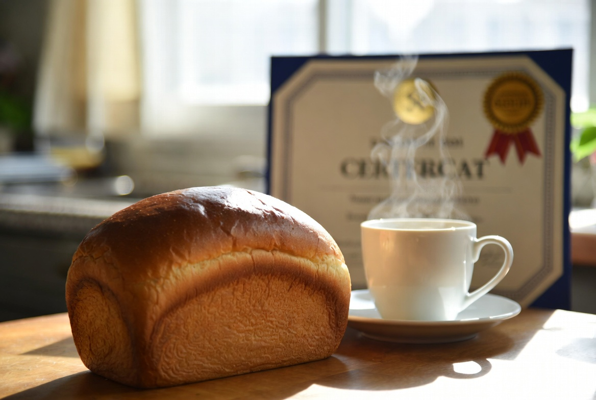
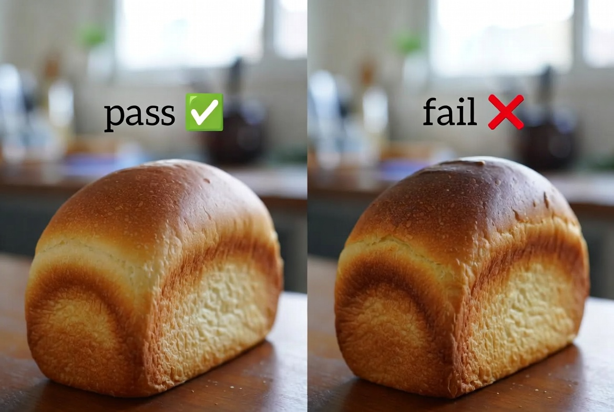

습도 42% 날, 58분을 그대로 밀어 본 날
9차에서 1차 발효 58분, 10차에서 식힌 뒤 바로 루즈 백을 겨울 기본으로 잡았습니다. 다만 두 실험 모두 습도가 35~36%대였고, '습도 40% 이상인 날에도 58분이 맞는지'는 따로 열어 두지 않았습니다.

11차 목표는 반죽·시럽·밤·브러싱·보관 분(0분)을 건드리지 않고, 실내 습도만 다른 날에 같은 58분을 재현하는 것이었습니다. 레시피를 바꾸는 날이 아니라, 9차 숫자가 환경 메모 없이 복사되면 안 된다는 걸 확인하는 날입니다.
2026년 2월 9일 실험입니다. 난방은 켜 두었지만 눈이 녹는 날이라 주방 습도계가 42%까지 올라갔습니다. 실내 온도는 19°C로 9·10차와 같았습니다. 1차 발효는 타이머 58분으로 시작하되, 손가락 눌림을 중간에 확인하기로 했습니다.
보관은 10차 A안 — 식힌 직후 바로 루즈 백. 개방 분을 다시 늘리지 않았습니다. 변수가 습도로 보이려면 보관은 고정해야 했습니다.
같은 분, 다른 눌림
- 발효 속도 — 58분 종료 시점 손가락 눌림이 9차보다 느슨. 약 55~56분쯤이 9차와 비슷한 텐션이었을 가능성
- 겉·속 (다음 날) — 10차 바로 백과 비슷. 겉 건조는 9차(40분 개방)보다 양호
- 향·밀착 — 8·9차 수준 유지. 습도만 바꿨다고 토핑이 무너지진 않음
가족은 '어제(10차)랑 비슷하다'고 했습니다. 제 기준으로 11차는 부분 확인 — 겨울 조합은 유지 가능하지만, 58분은 습도 35%대 기준 숫자이지 모든 겨울 날의 정답이 아닙니다.

당일 오븐 색·윤기는 9차와 구분하기 어려웠습니다. 차이는 발효 중·직후 반죽 텐션에서 먼저 보였고, 다음 날 식감 차이는 10차와의 비교에서 작았습니다.
58분을 끝까지 밀어 구운 이유는 '숫자를 한 번 더 검증'하기 위해서였습니다. 중간에 55분으로 잘랐다면 9차와 다른 변수가 섞입니다. 다음 날 메모에 '다음엔 42%면 55~56분 후보'를 적어 두었습니다.
습도가 발효 속도에 준 영향
습도 ↑ → 같은 분에서 발효가 더 진행 — 부분 확인. 온도 19°C 동일, 습도만 35→42%. 눌림 테스트가 9차보다 이르게 느슨해짐.
바로 백 보관 — 10차 재현. 겉 건조는 9차 대비 양호, 소폭 눅눅함은 허용 범위.
58분 = 겨울 고정값 — 기각에 가깝. 정확히는 19°C·습도 35% 전후에서의 기준 분. 습도가 오르면 분을 줄이거나, 분을 유지하되 손가락 눌림을 우선.
9차에서 '환경마다 58분이 정답이 아닐 수 있다'고 FAQ에 적어 둔 문장을, 11차가 숫자로 받쳐 줍니다. 타이머만 복사하지 말라는 실전 정리 주의와 같습니다.
눈이 녹는 날·빨래 건조 직후·주방 창을 잠깐 연 날처럼 습도만 튀는 경우가 있어, 메모 칸에 습도를 빼먹으면 58분 재현이 어긋납니다.
환경(습도)만 다른 재현
고정: 9차 반죽·시럽·밤·브러싱·58분 타이머 시작 + 10차 바로 루즈 백. 달라진 것: 실내 습도 42%(9·10차는 35~36%). 의도적으로 레시피 숫자를 바꾸지 않았습니다.

'환경'을 변수로 세는 날이었습니다. 오븐·밀가루·밤 배치가 같아야 습도 효과만 보입니다. 반죽 위치는 9·10차와 같이 식탁~오븐 3m, 난방 바람 직사 회피.
반죽 종료 24°C, 굽기 200/190°C 32분. 실험일 2026-02-09, 발행 2026-07-19.
습도계는 발효 시작 직전과 종료 직후 두 번 읽었습니다. 42% → 41%로 거의 유지됐습니다. 한 번만 재면 '그날 분위기'로 착각하기 쉽습니다.
56·55분 후보로
- 12차 발행: 습도 42%대 1차 발효 56분 확인 (55분은 이후 후보)
- 신선 밤 크기 선별 루틴 (겨울 밖 재료 변수)
- 바로 백 입구 헐거움 미세 조정 (10차 눅눅함 잔여)
11차로 '58분을 맹신하지 말 것'은 확인했습니다. 다음 구움은 분을 줄이되, 습도·온도 메모를 같은 줄에 남깁니다.

실전 정리에 고습 56분 후보를 반영했습니다. 상세는 12차.
숫자를 맹신하지 않기 위한 재현
습도가 높은 날 처음부터 55분으로 가면, 9차 58분과의 비교가 흐려집니다. 11차는 같은 타이머를 한 번 더 밀어 환경 차이만 보이게 하려는 목적이었습니다.
과발효가 심했다면 중간에 잘랐겠지만, 당일 기준으로는 '조금 더 느슨한 9차' 수준이었습니다. 그래서 굽기까지 진행하고, 다음 후보로 분 단축을 남겼습니다.
9·10·11차는 겨울 시리즈로 묶입니다. 9=발효 분, 10=보관 개방, 11=습도 재현. 세 편이 있어야 '겨울 고정값'이 표가 아니라 조건 묶음이 됩니다.
습도 두 번 읽기
실험 당일 메모: 2026-02-09, 난방 ON, 습도 42%→41%, 1차 58분(눌림은 9차보다 느슨), 바로 루즈 백. 다음 날 겉·속 한 줄.
겨울 메모에 '습도' 칸을 발효 분 바로 옆에 두었습니다. 온도만 적던 9차 초안보다 비교가 빨랐습니다.
타이머와 손가락 눌림이 어긋나면 눌림을 우선하고, 타이머 숫자는 '그날 환경에서의 참고값'으로만 남깁니다. 11차 결론을 한 줄로 쓰면 이 문장입니다.
습도계를 쓰는 분께
겨울에 타이머만 58분으로 맞추셨다면, 그날 습도를 같이 적어 보셨는지 문의로 알려 주세요. 제 11차는 42%에서 58분이 조금 여유 있었습니다.
난방 온도만 같고 습도가 다르면 결과가 갈립니다. 온도계만 보고 분을 고정하지 마세요.
처음이면 실전 정리 → 9차 → 10차 순으로 보시고, 11차는 '숫자 복사 금지' 보강 일지로 읽으면 됩니다.
11차를 닫으며
11차는 9·10차 겨울 조합을 습도 42% 날에 재현한 기록이었습니다. 겉·속은 10차와 비슷했고, 발효는 같은 58분에서 9차보다 조금 더 진행된 느낌이었습니다.
적용 숫자와 표는 실전 정리를 보세요. 이 일지는 그 표의 실험 근거로만 남깁니다.
이 글은 운영자의 직접 경험을 바탕으로 작성되었으며, 오븐·재료·환경에 따라 결과는 달라질 수 있습니다. 식품 위생·알레르기 등 건강 관련 판단을 대체하지 않습니다.